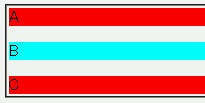
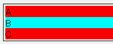

マージンに関するプロパティに 'auto' を指定してボックスをセンタリングする際、縦方向マージンにもautoが指定されたときやmarginプロパティでセンタリングしたときに上下マージンの量はスタイルシートでの指定を無視した値になる。
<div style="margin:0; background:red;">A</div> <div style="margin:1em auto; background:aqua;">B</div> <div style="margin:0; background:red;">C</div>
これは症状の「marginプロパティでセンタリングしたとき」の例示です。'B' のdiv要素は上下に1文字分のマージンを設定しています。
WinIE6.0での表示
Opera6.05での表示
Opera6.05では不具合の発生が確認されました。Opera7.0では標準・互換モードともに不具合の発生は確認されませんでした。